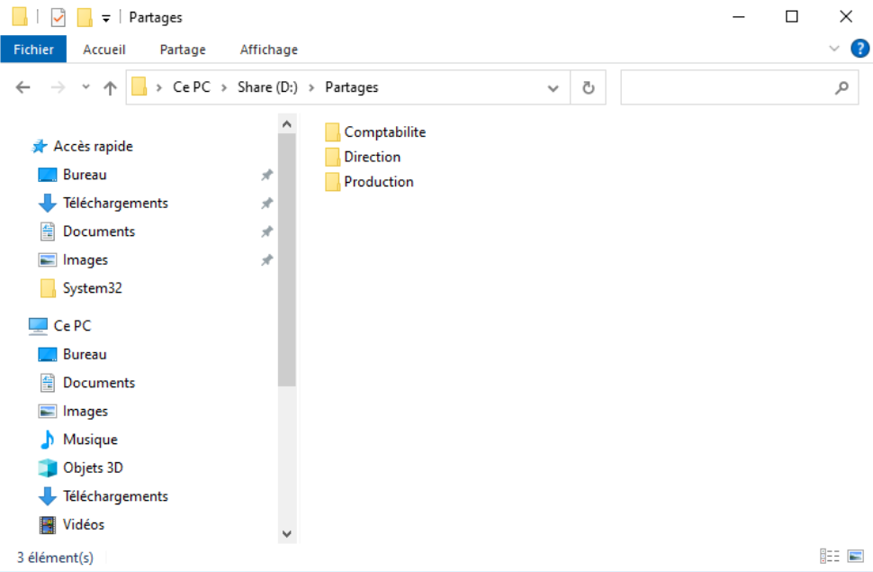
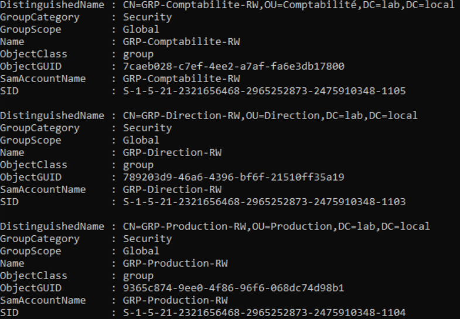
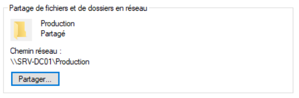
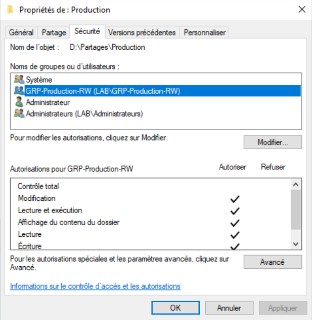
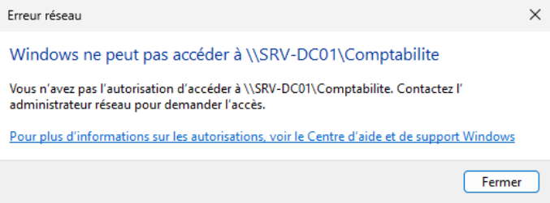

TP10 - Serveur de fichiers
Théorie : Cours - Fichiers et Permissions
Captures :99-Captures/TP10/· Prérequis : TP06-Utilisateurs-et-groupes
Objectif
Mettre en place un serveur de fichiers centralisé en utilisant les bonnes pratiques Microsoft :
- création de partages réseau ;
- attribution des permissions NTFS ;
- utilisation de groupes Active Directory plutôt que de droits directs sur les utilisateurs ;
- validation des accès depuis un poste client.
À l'issue de ce TP, les utilisateurs disposeront d'un espace partagé propre à leur service.
Architecture
Le serveur SRV-DC01 hébergera plusieurs dossiers partagés.
D:\Partages
│
├── Direction
├── Production
└── Comptabilite
Chaque dossier sera accessible uniquement aux membres du groupe correspondant.
| Dossier | Groupe autorisé |
|---|---|
| Direction | GRP-Direction-RW |
| Production | GRP-Production-RW |
| Comptabilite | GRP-Comptabilite-RW |
Prérequis
- [v] TP06-Utilisateurs-et-groupes validé
- [v] TP09-DHCP validé
Étapes
1. Création de l'arborescence
Sur SRV-DC01, créer le dossier :
D:\Partages
Créer ensuite les sous-dossiers :
Direction
Production
Comptabilite
L'arborescence obtenue doit être :
D:\Partages
│
├── Direction
├── Production
└── Comptabilite

Arborescence des dossiers
2. Vérification des groupes Active Directory
Ouvrir :
Outils
→ Utilisateurs et ordinateurs Active Directory
Vérifier l'existence des groupes :
- GRP-Direction-RW
- GRP-Production-RW
- GRP-Comptabilite-RW

Groupes de sécurité3. Création des partages
Partager chacun des dossiers.
Exemple :
D:\Partages\Direction
Nom du partage :
Direction
Faire de même pour :
- Production
- Comptabilite
Conserver les paramètres par défaut pour les permissions de partage. Les restrictions seront principalement assurées par les permissions NTFS.

Création des partages
4. Configuration des permissions NTFS
Pour chaque dossier :
- ouvrir Propriétés
- onglet Sécurité
- supprimer les autorisations inutiles si nécessaire ;
- ajouter le groupe correspondant.
Exemple :
Dossier Direction
Ajouter :
GRP-Direction-RW
Autoriser :
- Modifier
- Lecture et exécution
- Affichage du contenu
- Lecture
- Écriture
Procéder de la même manière pour les autres dossiers.

Permissions NTFS
5. Vérification des accès depuis le client
Se connecter sur WIN11-CLIENT01 avec un utilisateur appartenant au groupe :
GRP-Production-RW
Ouvrir :
\\SRV-DC01
Tester :
- ouverture du dossier Production ;
- création d'un fichier texte ;
- modification du fichier ;
- suppression du fichier.
Vérifier ensuite que l'utilisateur ne peut pas modifier les dossiers Direction ou Comptabilite.

Test des permissionsValidation
- [v] Les dossiers sont créés
- [v] Les partages sont publiés
- [v] Les permissions NTFS utilisent uniquement des groupes AD
- [v] Les utilisateurs autorisés peuvent modifier leur dossier
- [v] Les utilisateurs non autorisés sont refusés
Progression
| Étape | Lien |
|---|---|
| Prérequis | TP06-Utilisateurs-et-groupes |
| Suite recommandée | → TP11-GPO |
| Branches | Cours - PowerShell Bases |
| Théorie | Cours - Fichiers et Permissions |
Suivi : Progression